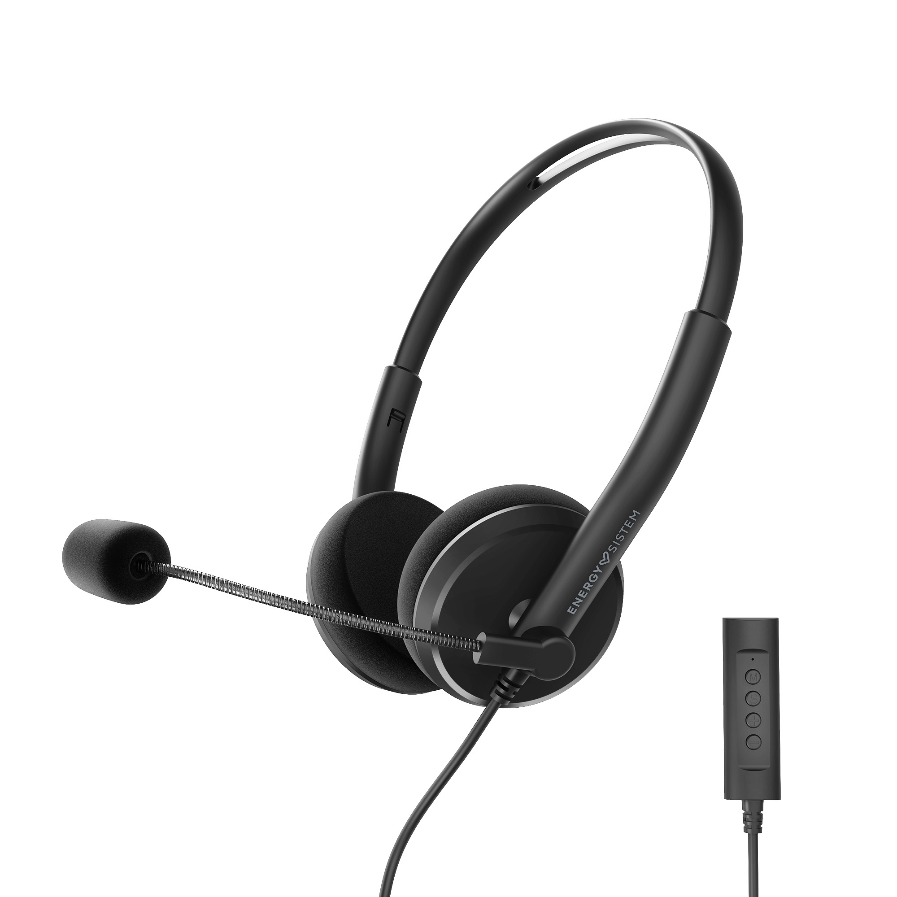
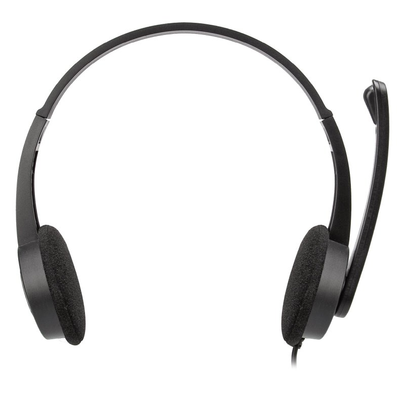
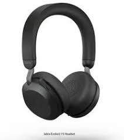
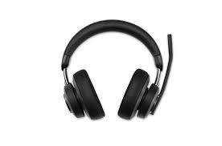
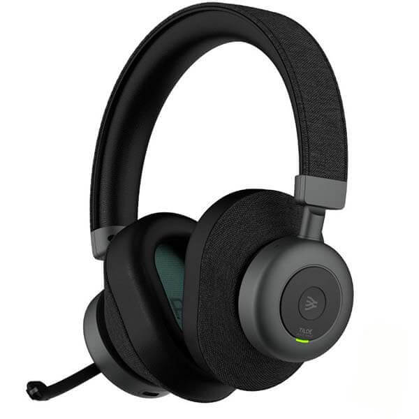
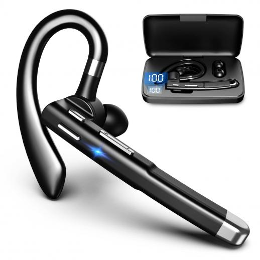
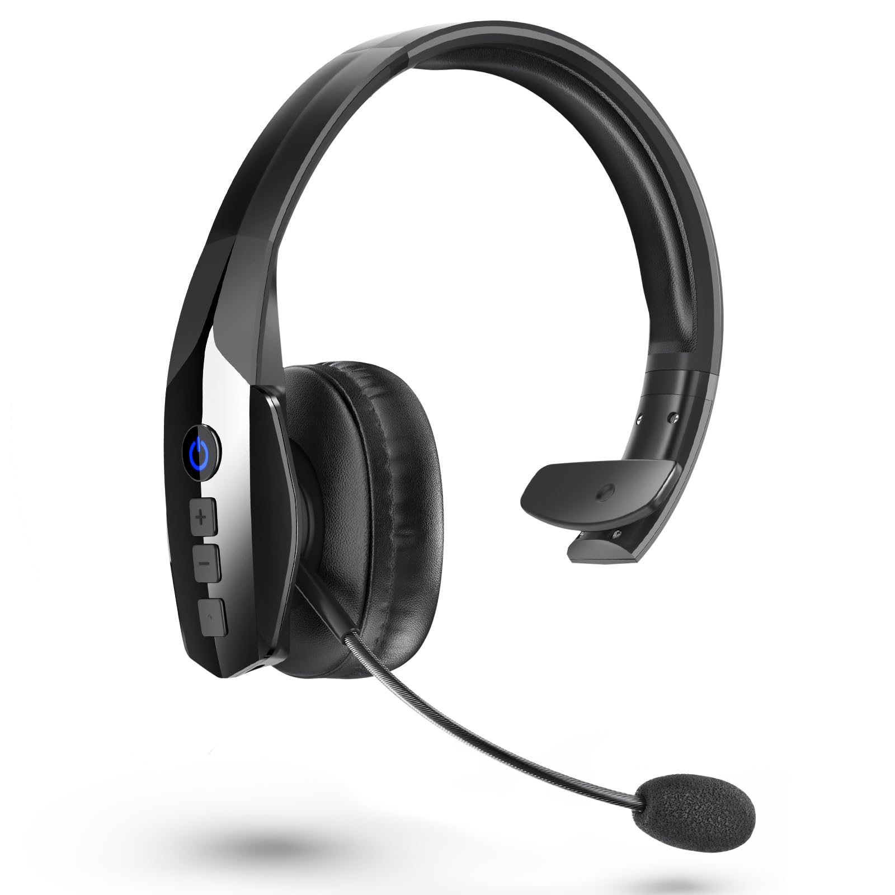
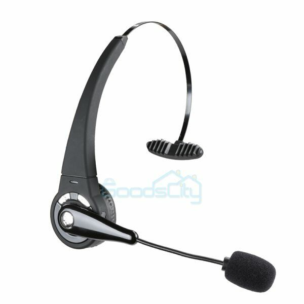
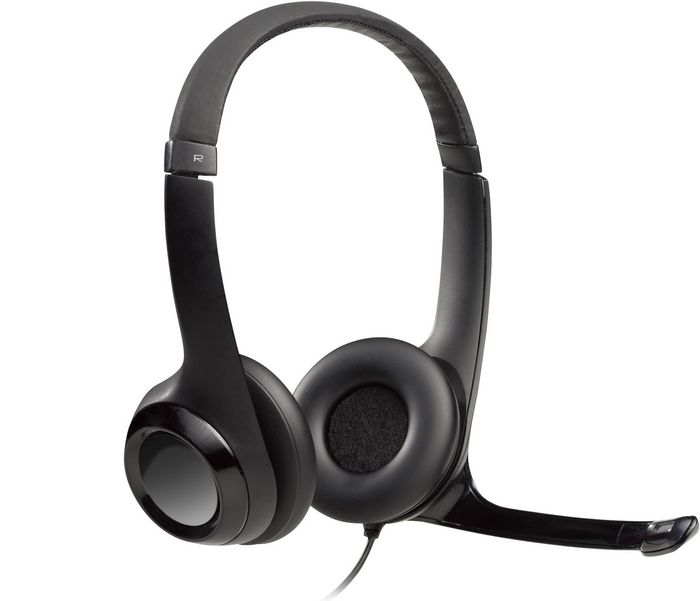
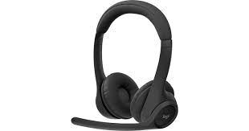

CASCOS
Para el trabajo
¿Para que sirven estos cascos y porque usarlos?
Los auriculares diseñados para el trabajo son herramientas ideales para videollamadas, conferencias y tareas de concentración. Ofrecen comodidad para largas jornadas, incluyen micrófonos de alta calidad para una comunicación clara y, en muchos casos, cancelación de ruido para reducir distracciones. Están disponibles en modelos con cable o inalámbricos, y algunos integran controles para gestionar llamadas o ajustar el volumen fácilmente. Son perfectos para mejorar la productividad y la calidad en entornos laborales.









